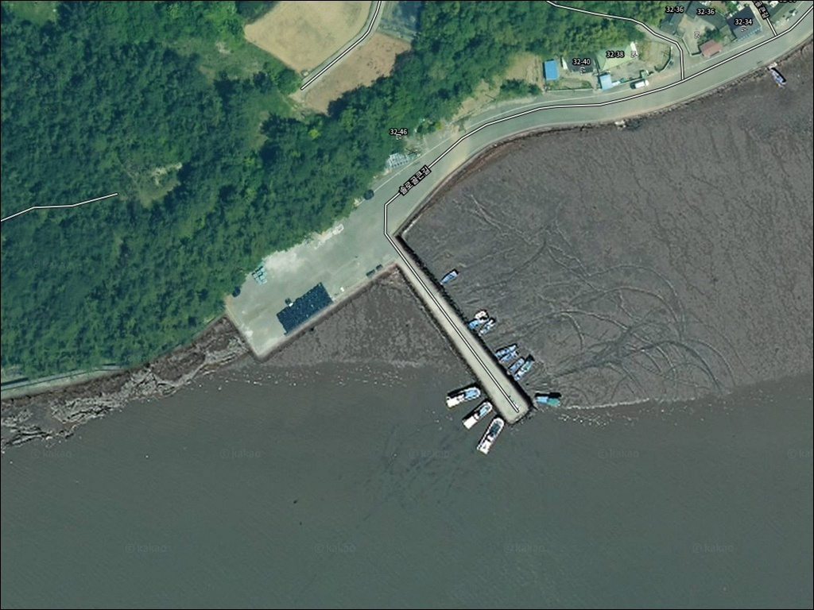
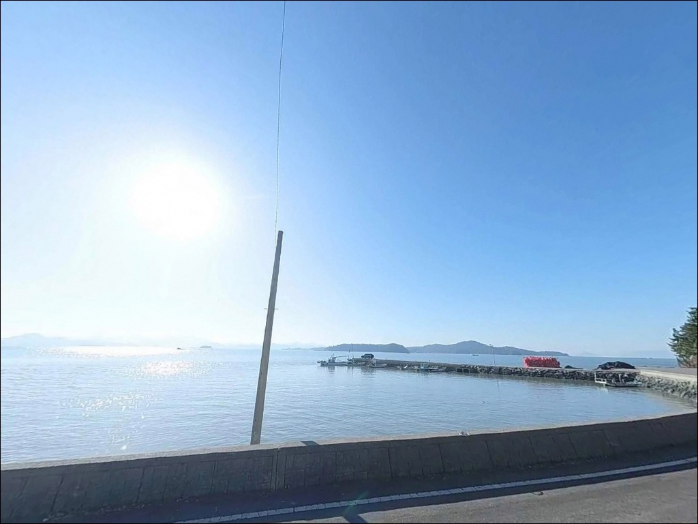
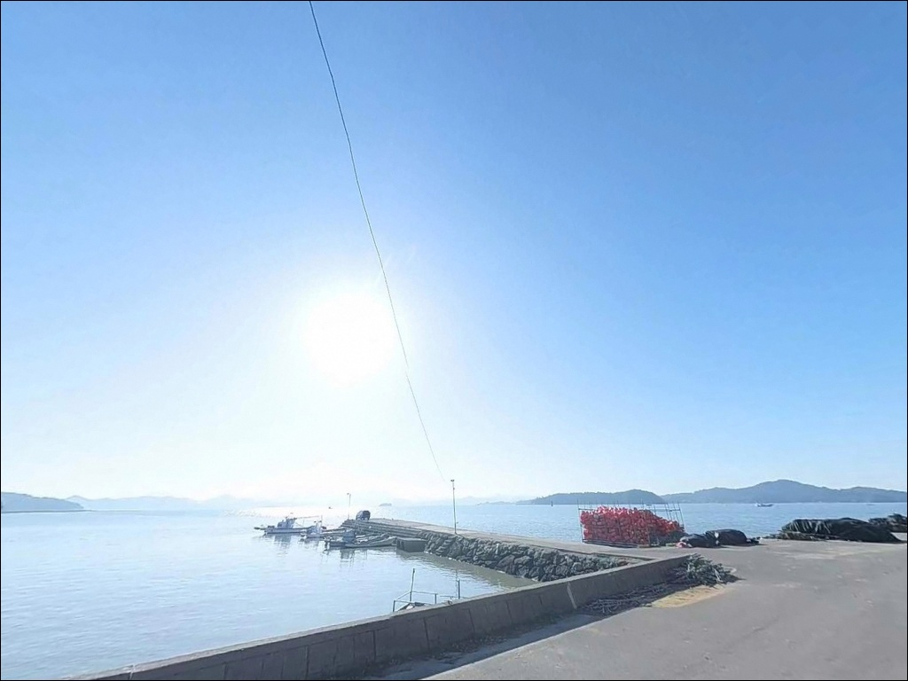
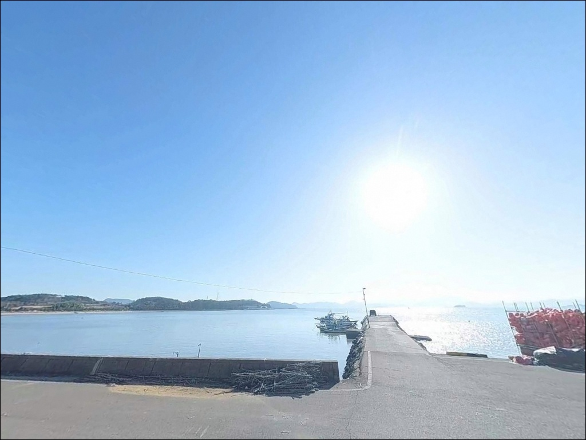
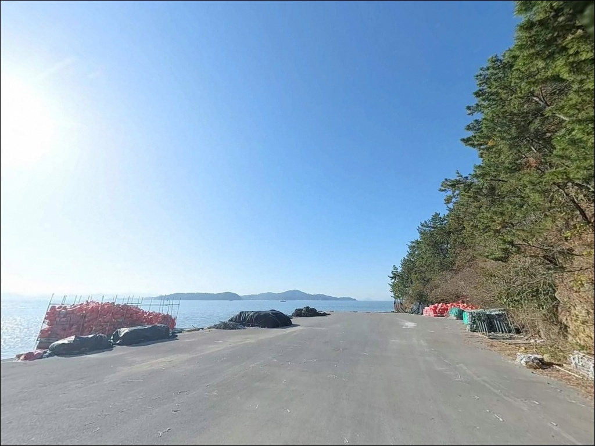
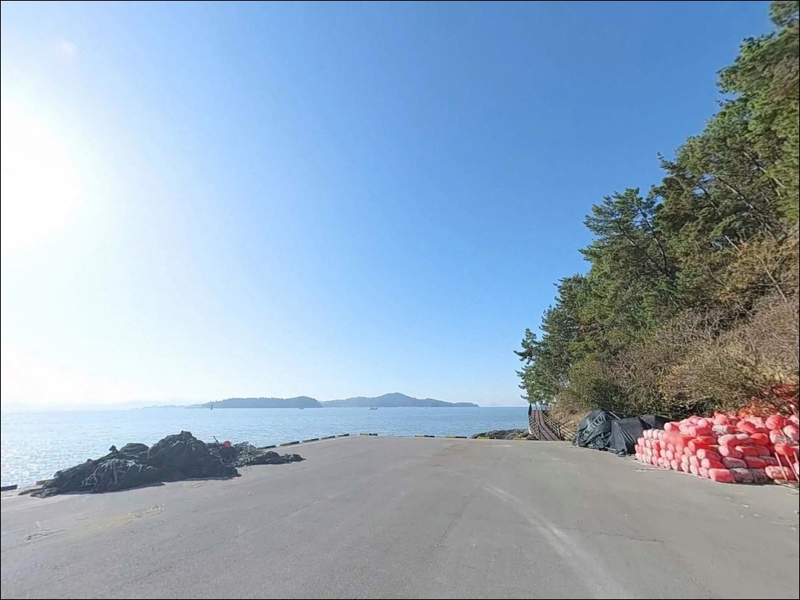
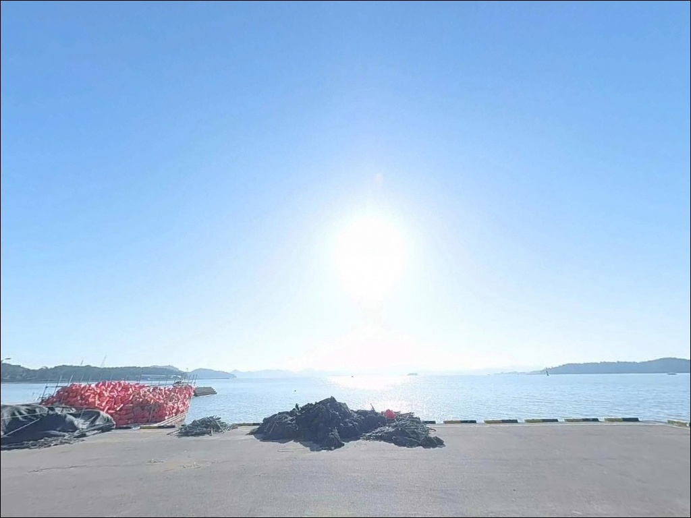
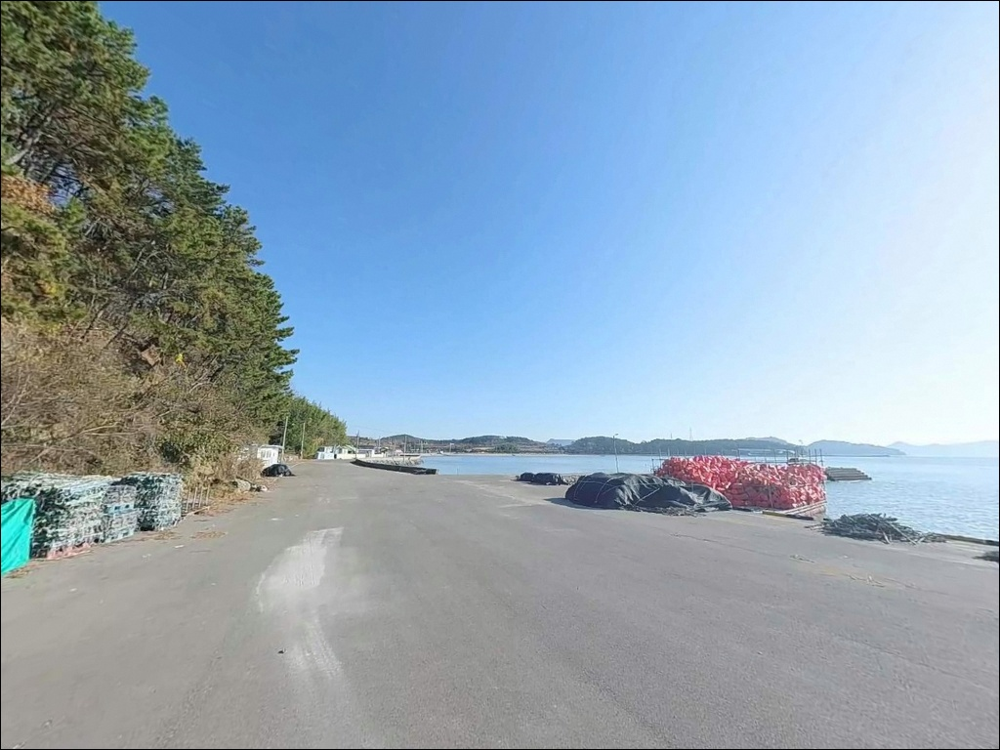
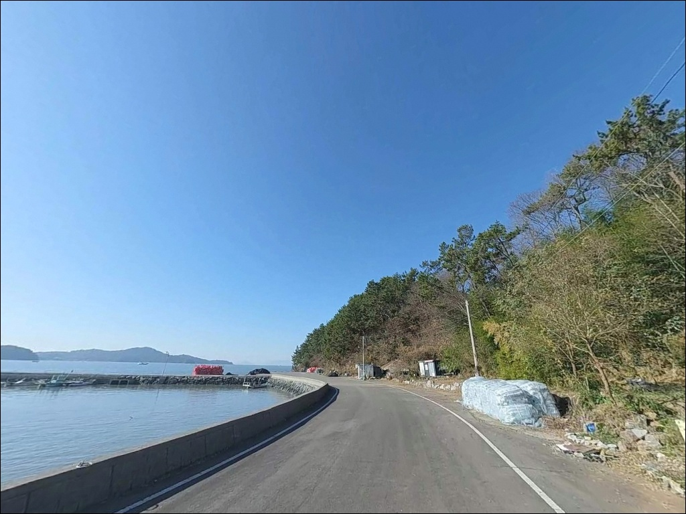

송림리선착장, 전남 고흥군 바다 감성 물씬 풍기는 해변 차박 낚시 장소
이 페이지에는 광고(제휴 링크 포함)가 있으며, 광고 링크를 통해 구매하면 운영자가 판매 수익 또는 수수료를 받을 수 있습니다. 포인트 사진: 카카오맵 스카이뷰·로드뷰. 이 페이지의 지도·사진 이미지는 카카오맵의 실제 서비스 이미지와 다를 수 있습니다.


포인트 안내
송림리선착장 (송림항)
전남 고흥군 대서면 송림리 593-3
득량만 내만 포인트는 파도가 잔잔해
언제든 낚시가 될 것 같은 인상을 줍니다.
하지만 간조 시 수심이 급격히 낮아지는 구조라
물때를 맞추지 않고 진입하면
낚시 자리 자체를 잡기 어려워지는 상황을
맞닥뜨리게 됩니다.
송림리선착장은 물때 확인이 조과보다 먼저인
전형적인 득량만 내만형 포인트입니다.
전남 고흥군 대서면 송림리,
득량만 동쪽 연안에 위치한 이 선착장은
2025년 9월 어촌뉴딜 300사업 준공으로
방파제가 새로 놓이고 선착장이 연장된
최근 정비된 소형 어항입니다.
남파랑길 75코스가 지나는 해안 마을 안에 있어
진입로 접근성도 나쁘지 않습니다.
이 글은 송림리선착장의
진입 환경, 차박 여건, 물때 판단 기준,
낚시 방식별 지형 적합성에 집중합니다.
조황 단정이나 특정 어종 보장은
이 글의 범위에 포함되지 않습니다.

1. 포인트 위치 및 진입 동선 분석
고흥군 대서면 소재지(금마리)에서
해안 방향으로 접근하면
송림마을 안쪽으로 이어지는 도로가
선착장까지 직접 연결됩니다.
포장 상태는 양호하며,
승용차·소형 SUV 기준으로
무리 없이 접근 가능한 구간입니다.
최종 접근로는 1~1.5차선 수준의
농어촌 도로로 좁아지는 구간이 포함됩니다.
선착장 끝단 부지는 넓게 포장되어 있어
도착 후 회차는 어렵지 않습니다.
대형 캠핑카나 장축 차량이라면
진입 전 위성지도로
마을 내 교행 구간을 미리 확인하는 편이
안전합니다.
주차는 선착장 진입 직후 좌측 공터와
방파제 시작 지점 인근 포장 노면을
활용하는 방식이 일반적입니다.
어촌뉴딜 사업 준공과 함께 접안부 포장이
이루어진 공간으로,
차량 3~5대 수용이 가능한 수준입니다.
어선 접안 동선을 막지 않는 자리를
우선으로 잡는 것이 기본 매너입니다.

2. 차박 환경과 야간 체류 여건
송림리선착장은 낚시 대기형 차박에
어울리는 포인트입니다.
선착장 앞 공터와 방조제 초입부 공간에
소형 차량 기준으로 야간 주박이 가능하며,
방파제 등대 불빛이 있어
완전 암소 환경은 아닌 편입니다.
민가가 선착장 주변까지 이어지는
어촌 마을 구조라 프라이버시는 제한적입니다.
새벽에 어업 활동 차량이 진입하는 경우가 있어
숙면이 목적이라면
주차 자리 선택에 신경 써야 합니다.
장기 체류보다는 낚시 전후 단기 대기 용도로
활용하는 방식이 현실적입니다.
득량만 내만 구조 특성상
너울과 파도의 직접 영향이 적어
바람이 잔잔한 날에는
조용한 야간 환경이 갖춰지는 편입니다.
다만 북풍 계열 바람이 강한 날에는
내만이라도 파고 영향을 받을 수 있으므로
출발 전 풍향 확인이 필요합니다.


3. 주변 편의시설 및 인프라 현황
선착장에서 3km 안쪽으로 이동하면
대서면 소재지(금마리) 생활권에 닿습니다.
면 소재지 수준의 기본 인프라가 갖춰진 지역으로
식료품 보급과 연료 확인이 가능한 편입니다.
구체적인 편의점·주유소 운영 여부는
현지 도착 전에 사전 확인하는 것이
안전합니다.
어촌뉴딜 300사업 준공으로
선착장 인근에 방문자센터와
공동작업장이 신축 완료되어 있습니다.
기존보다 현장 여건이 정비된 상태이나,
낚시 채비나 식수는
출발 전에 갖춰 오는 것이
완전 자급 원칙에 맞는 준비입니다.
응급 상황 발생 시 대서면 보건지소가
면 소재지 방향에 있으며,
벌교읍 소재 병의원까지는
차량으로 15분 안팎이 걸립니다.
고흥군 특성상 의료 접근성이 제한된 지역이므로
비상약품과 수분은
넉넉하게 챙겨 오는 편이 좋습니다.

4. 방문 전 물때 판단과 준비사항
송림리선착장 방문 전에
가장 먼저 확인할 것은 물때입니다.
득량만 내만 구조 특성상
간조 시 갯벌이 드러나는 구간이 형성되며,
낚시 가능한 수심이 유지되는 타이밍은
만조 전후 2시간 안팎이
기본 판단 기준입니다.
바다타임에서 대서면 기준 물때를 확인하고
입장 시각을 맞추는 것이 먼저입니다.
득량만 연안은 사리 전후
뻘물이 들어오는 경향이 있어
조금 전후에 물색이 맑아지는 편입니다.
물색이 탁한 날에는
채비를 멀리 던져
맑은 물색 구간을 탐색하는 방식이
이 해역에서 효율적입니다.
내만형 포인트라도
기상 변화에 따른 풍향 영향은 받습니다.
특히 북풍이 강한 날은
파고 영향을 확인해 두는 것이 좋습니다.
방파제·선착장 끝단은 야간·우천 시
미끄럼 위험이 있으므로
구명조끼와 헤드랜턴은 필수 장비입니다.
채비 밑걸림이 잦은 지형이니
여분 채비도 넉넉히 준비하는 편이 좋습니다.

5. 물때가 맞아야 달라지는 지형 낚시 여건
송림리선착장은 득량만 동쪽 연안,
보성군·장흥군·고흥반도 세 방향이 감싸는
내만 지형 안쪽에 자리합니다.
외해 파고의 직접 영향이 차단되고
조류 소통은 만 전체의 조석 흐름에
따라 움직이는 구조입니다.
선착장 전면은 수로와 갯벌이 맞닿아 있으며,
방파제 끝단이 가장 수심이 깊은 구간입니다.
신축 방파제는 석축 기반으로 발판 상태가 양호하고,
외항과 내항 양면 구조를 갖추고 있어
낚시 자리 선택의 폭이 있습니다.
바닥은 뻘과 모래가 혼합된 내만형 구조로,
선착장과 방조제 사이 수로 구간에서
조류 흐름이 살아나는 물돌이 타이밍이
이 포인트의 핵심 입질 시간입니다.
인근에 송림방조제와 배수갑문이 위치해 있어
선착장 단독이 아닌
이 구간 전체를 묶어 탐색하는 방식이
이 포인트를 제대로 활용하는 방법입니다.
배수갑문 주변은 수심 변화가 만들어지는 지점이라
조류가 움직이는 타이밍에 입질이 집중되는
경향이 있습니다.
출조 전 최신 조황은
"대서면 송림리 낚시", "고흥 득량만 방파제 조황"으로
검색해 확인하시기 바랍니다.


6. 포인트 지형에 맞는 낚시 스타일
이 포인트에서 가장 잘 맞는 방식은
원투낚시입니다.
뻘·모래 혼합 바닥과 완만하게 깊어지는
내만형 수심 구조는
채비를 멀리 보내 바닥층을 탐색하는 방식에
유리한 조건을 갖추고 있습니다.
방파제 외항 방향으로 장타를 던지면
보리멸·붕장어 계열 어종을
기대해볼 수 있는 지형입니다.
에깅과 루어낚시도 이 포인트에 어울립니다.
고흥 연안 전역은 갑오징어·주꾸미·문어
포인트권에 속하며,
신축 방파제 외항 콧부리와 선착장 끝단에서
에기 채비를 운용하는 방식이
이 지형 구조에 적합합니다.
4월 이후 갑오징어 입질이 활발해지는
시즌에 특히 잘 맞는 방식입니다.
릴찌낚시도 선택 가능한 방식입니다.
방파제 외항 콧부리에서
조류를 타는 채비를 운용하는 방식으로,
고흥 연안 방파제 전역에서 연중 이어지는
감성돔 낚시 패턴이 이 포인트에도
적용됩니다.
가을 이후 씨알이 오르는 경향이
이 일대 해역의 공통 패턴입니다.

7. 대안 포인트와 플랜 B 동선
선착장 주차 여건이 여의치 않거나
낚시 자리가 좁을 때
첫 번째 대안은
송림방조제와 배수갑문 일대입니다.
선착장과 같은 해안선 안에 있어
이동 거리가 짧고,
배수갑문 주변 수심 변화 구간은
원투낚시와 루어 공략에 모두 활용 가능합니다.
같은 득량만권으로 이동하면
고흥 풍양면 방파제 일대(장계방파제·잠두방파제)가
대안 포인트가 됩니다.
어종 다양성과 접근성이 검증된 지역이며,
사전 웹 조황 정보가 축적된 곳으로
송림리선착장 조황이 기대에 못 미칠 때
이동 동선으로 묶기 좋습니다.
차박을 병행하는 경우
대서면에서 고흥 두원면 방향으로 이동하면
대전해수욕장이 있습니다.
소나무 숲과 백사장이 인접한 환경으로
편의시설이 상대적으로 갖춰져 있어,
조용한 1박을 원한다면
송림리선착장 낚시 후 이동하는
플랜B 차박지로 적합한 곳입니다.

물때와 지형을 알고 가면
송림리선착장이 달리 보입니다
원투낚시나 에깅을 주력으로 하는 낚시인이라면
득량만 내만 특성이 잘 갖춰진
송림리선착장의 지형 구조는
맞는 편입니다.
2025년 9월 신축된 방파제와
정비된 선착장 공간이 발판을 더해주고,
선착장·방조제·배수갑문을 묶어서
탐색하면 공략의 폭도 넓어집니다.
반면 물때 확인 없이 간조 시간대에 찾아가거나,
편의시설을 기대하고 간다면
허탕을 칠 가능성이 높습니다.
물때 확인, 자급 준비, 진입로 사전 점검,
이 세 가지를 갖추고 들어가는 것이
이 포인트를 제대로 활용하는 조건입니다.
조용한 어촌 마을 분위기 속에서
방파제 자리 하나를 잡고
낚시와 가벼운 1박을 함께 즐기고 싶은
낚시인이라면,
득량만 일대를 처음 탐색하는 기점으로
송림리선착장을 첫 답사지로
잡아보는 것도 나쁘지 않습니다.